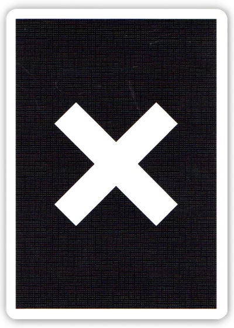
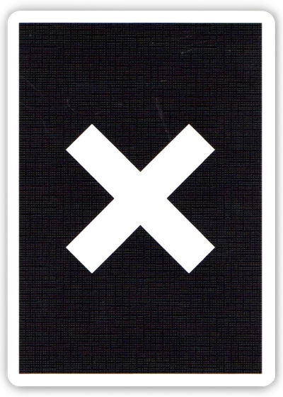

Nihilism Playing Cards
Nihilism Playing Cards is crafted by the latest paper stock - "Vintage Stock", which I would say is
the best stock ever. The stock is thin, flexible, and features a moderate stiffness. To be specific
, it is as thin as the Luxury Stock (Scythe), and the stiffness is right between the Luxury and the
Classic (Prototype) Stock. As for the finish, I chose to use the "Legendary Finish", the finest
finish that is able to keep the cards smooth and durable for both cutting and fanning.Tuck box is
made of Matt Paper, this makes the surface of the box darker and richer in texture.
 

Cards:55
Stock: Vintage
Finish: Legendary
Design by Westmen